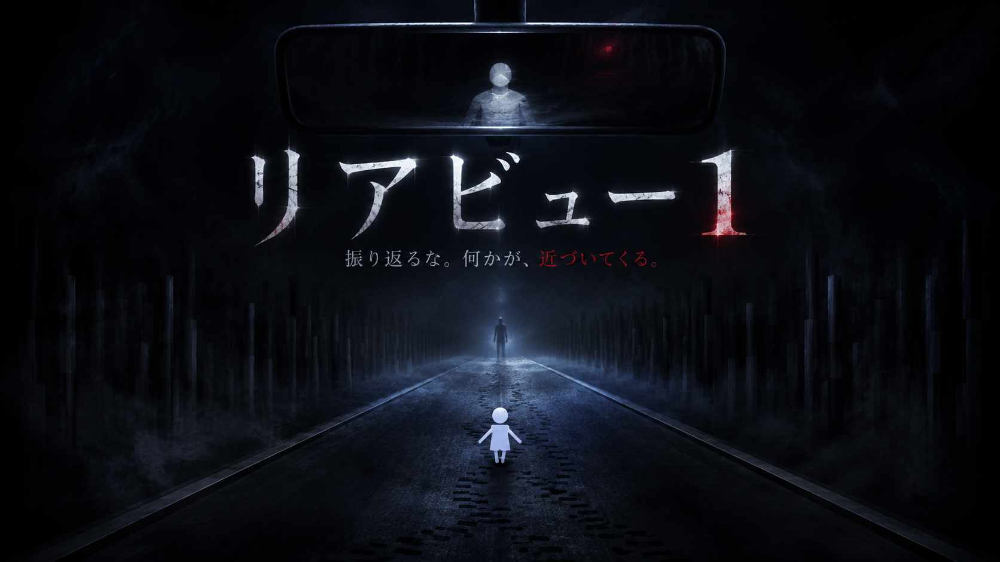
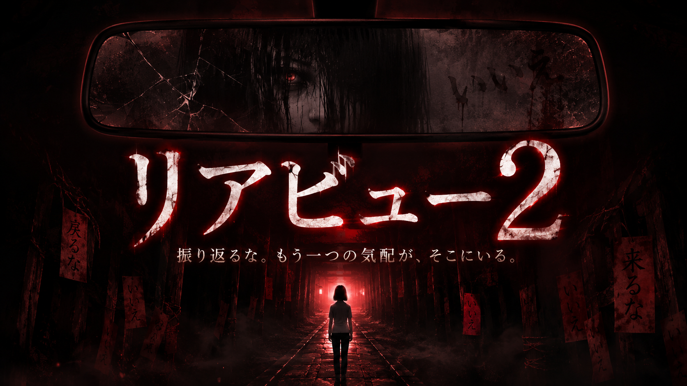
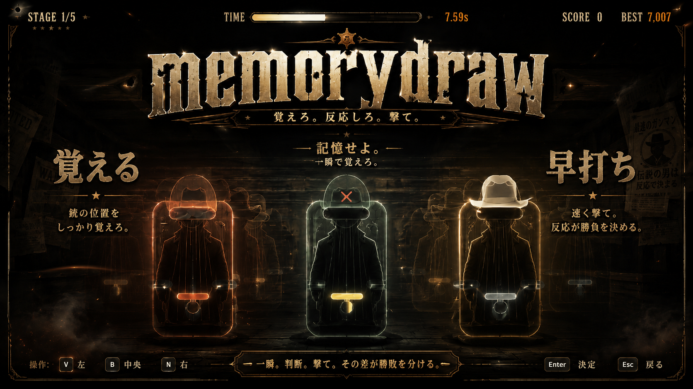
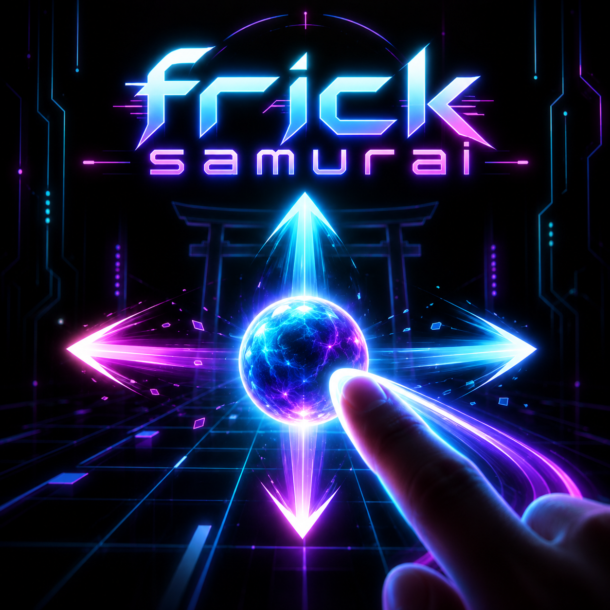
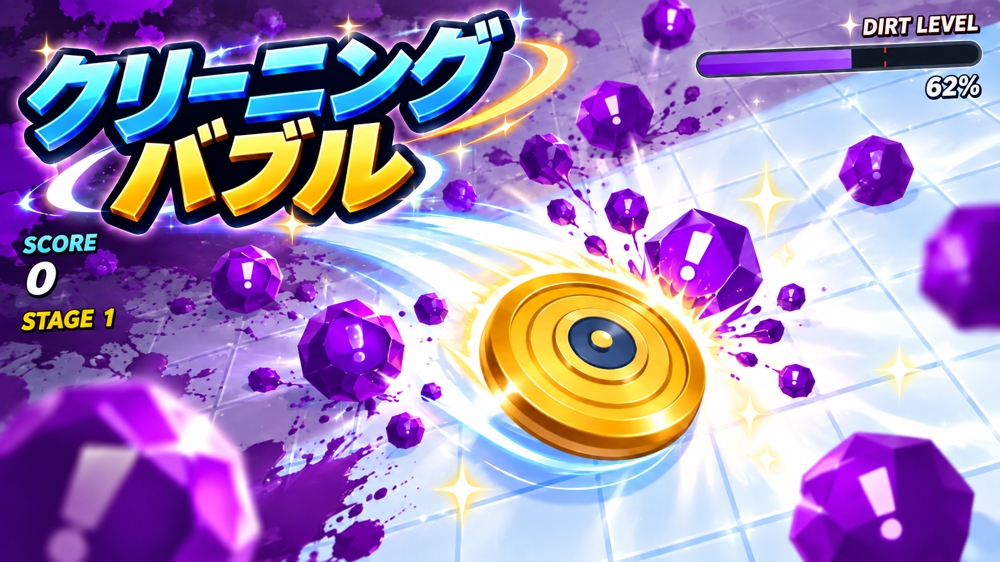

縫魔妖斗のオリジナル作品
ブラウザーゲーム一覧
縫魔妖斗のブラウザーゲーム一覧。幽霊から逃げるリアビュー1、都市伝説の攻撃を避けるリアビュー2、memorydraw、flickSamurai、クリーニングバブルを紹介。各作品の操作方法と対応端末を確認して、サイト内で遊べます。



ブラウザーゲーム
flickSamurai
漢字が書かれてるひし形が落ちる前に上下左右に振れ スワイプの方向はひし形の先端に小さい点が目印 スマホはスワイプ PC版はクリック押しながら動かす『激ムズ』 スマホ用に作ってあるのでPC版は見る程度に
スマートフォン推奨PC操作は「激ムズ」・閲覧向け
flickSamuraiの紹介・操作方法 
ブラウザーゲーム
クリーニングバブル
部屋が汚れきったら即ゲームオーバー！？😱 迫り来るゴミやダストを消しまくるお掃除ディフェンス×反射アクション『Cleaning BUBBLE』！ ✅ 指でなぞるだけの直感スワイプ操作 ✅ 個性的な3種のクリーナー（ボム回数や範囲が変化） ✅ エンドレスモードの極悪サイバー空間 あなたの集中力、何万点まで保てる？🧹✨
スマートフォン・スワイプ対応PC・クリックしたままドラッグ対応
クリーニングバブルの紹介・操作方法